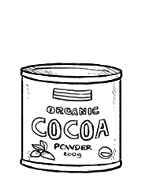

cocoa powder
Cocoa powder which is the dry powder made by grinding cocoa seeds and removing the cocoa butter from the cocoa solids, which are dark and bitter. The two basic types of cocoa powder are Dutch processed and Broma processed. Cocoa powder a source of calcium and zinc.
Recipes specifically call out whether they require Dutch-process or unsweetened cocoa. It's not a good idea to swap out regular cocoa for Dutch cocoa or vice-versa. Dutch-process cocoa does not react with baking soda like regular cocoa does, so you should only use Dutch-process cocoa in those recipes that have baking powder (see ref).
The Broma process consists of hanging bags of roasted cocoa beans in a very warm room, above the melting point of cocoa butter (slightly above room temperature), and allowing the cocoa butter to drip off the beans, where it is collected, resulting in unsweetened cocoa that is dark brown, acidic and bitter. The Dutch process differs from the Broma process in that, after the cocoa butter has been drained off the beans as described above, the beans are then soaked in an alkaline solution to make them chemically neutral. Dutch process turns the cocoa a pale reddish brown and makes it chemically nonreactive.
Weight: 1/2 cup | 1 1/2 oz | 42 g
cocoa beans
Cocoa beans (also called cacao) are the dried and fermented seed of Theobroma cacao. The fruit, called a cacao pod, is ovoid, long and wide, ripening yellow to orange. The pod contains 20 to 60 seeds (or beans) embedded in a white pulp. Each seed contains a significant amount of fat (40–50 percent) as cocoa butter. The three main varieties of cocoa plant are Forastero (most common), Criollo (rarer, a delicacy), and Trinitario.
Its seeds are used to make chocolate liquor, cocoa solids, cocoa butter and chocolate. The fruit's active constituent is the stimulant theobromine, a compound similar to caffeine.